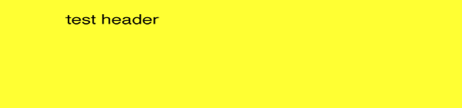

Home
Nielsen's 10 Usability Heuristics
Contact Us
1. Visibility of System Status
2. Match Between System and the Real World
3.User Control and Freedom
4.Consistency and Standards
5. Error Prevention
6. Recognition Rather Than Recall
7. Flexibility and Efficiency of Use
8. Aesthetic and Minimal Design
9. Help Users Recognize, Diagnose, and Recover from Errors
10. Help and Documentation
helo